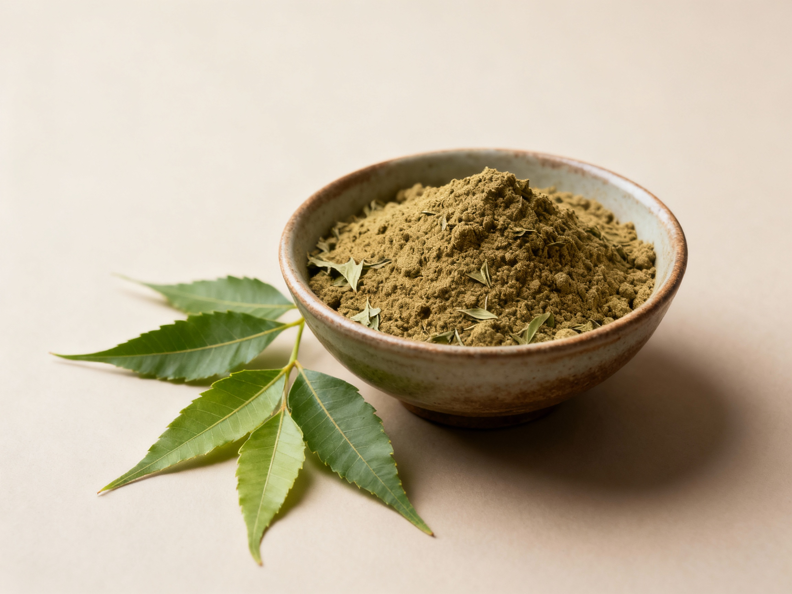

Shade-Dried Neem Powder (Leaf)
100% natural shade-dried neem leaf powder. Lightly processed to retain the full leaf phytochemical profile — ideal for herbal formulations, cosmetics, ayurvedic products and agricultural applications.
Plant Part: Neem Leaves (Azadirachta indica)
Processing: Hand-harvested, shade-dried, milled to fine powder
Color: Deep Green
Shelf Life: 12 - 18 Months (store in cool, dry place)
MOQ: 500 kg
Certification / Compliance: FSSAI (for food-grade), COA & lab-tested
Key Features
- Whole-leaf powder retaining natural phytochemicals.
- Suitable for cosmetics, herbal powders, soap & shampoo formulations and organic garden use.
- Low processing footprint.
- Lab-tested for microbial limits, heavy metals and pesticide residues; COA available on request.